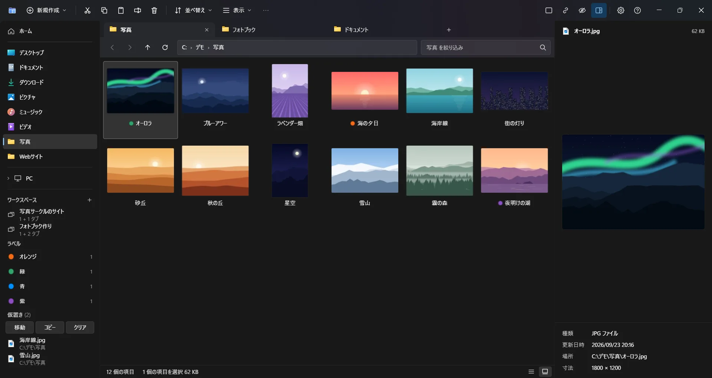
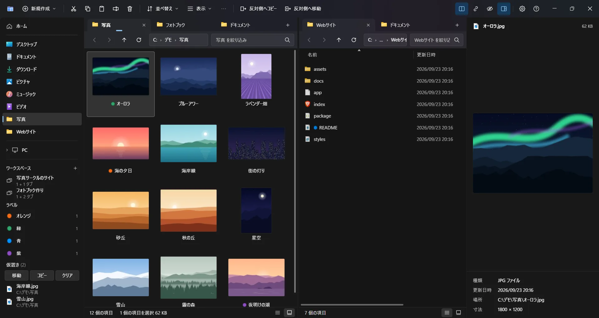

ShiftF5
連携する 2 画面
選んだものを Shift+F5 で反対側へコピー、Shift+F6 で移動。サブフォルダーへの移動に反対側を追従させることもできます。
デモで Shift+F5 を試す ↑

Bipane は、Windows 11 のエクスプローラーと同じ見た目・操作で使える、タブと 2 画面のファイラーです。覚え直すことはありません。
CtrlK機能
エクスプローラーと同じキー操作・右クリックメニューのまま、エクスプローラーにないものを足しています。
選んだものを Shift+F5 で反対側へコピー、Shift+F6 で移動。サブフォルダーへの移動に反対側を追従させることもできます。
デモで Shift+F5 を試す ↑Space で大きくプレビュー。HEIC やカメラの RAW の写真、動画、PDF、Office のファイルも。矢印キーでフォルダーの中を次々に見られます。ほかに何も入れる必要はありません。
デモで Space を試す ↑削除・移動・コピーの直後に「元に戻す」ボタン。前の操作は操作の履歴（Ctrl+Shift+H）から、再起動の前の分も戻せます。コピーや移動で置き換えたファイルはごみ箱に入るので（PC の内蔵ドライブ）、元に戻すで戻ります。
デモで Ctrl+Z を試す ↑zip・7z・rar・tar.gz などの書庫をフォルダーのように開いて（読み取り専用）、中の項目を Shift+F5 で反対側へ取り出せます。パスワード付きの書庫も開けます。
デモで Enter を試す ↑コマンドパレット（Ctrl+K）か Ctrl+Shift+D で切り替えます。Alt+P でプレビューの表示・非表示。
デモで Ctrl+Shift+D を試す ↑絞り込みに一致する項目はありません。
↑↓ で選択・Space でクイックルック・←→ で次と前。アプリと同じキーです。
書き方が違っても名前が見つかります。絞り込み・名前への移動・コマンドパレットで、同じものとして探します。
Ctrl+K で、操作やフォルダーを名前で探せます。
HEIC やカメラの RAW を含む写真、動画・音声、PDF、Office と OpenDocument のファイル（Office が無くても）、EPUB、フォント、書庫の中身。
開いているタブ一式を保存して呼び出せます。Ctrl+S で集めて、まとめて移動・コピー。
Shift+F2 で、片側だけ・新しい・古い・大きさ違いに印を付け、違う項目だけを反対側へコピーします。
Delete、1〜7 のカラーラベル、Ctrl+Z。RAW は JPEG／HEIC と一緒に扱います。
サブフォルダーの検索も。Everything・Windows のインデックスがあれば使います。
*.jpg・サイズ:>10MB・日付:今日・ラベル:赤。並べ替えとグループはフォルダーごとに覚えます。
zip は 1 クリックで。7z（パスワードも付けられます: AES-256、名前も暗号化）・tar・tar.gz も作れます。
最後に失敗した項目と理由を示し、それだけを再試行できます。行き先の空き容量も先に確認します。
エクスプローラーやほかのアプリの「開く・保存」と同じフォルダーが、同じ並びで出ます。
応答しないネットワーク上のフォルダーがあっても、ほかの操作は待たされません。
ShiftF2比較
2026 年 9 月 26 日に、Windows 11 25H2（ビルド 26200）のエクスプローラー、Files 4.2.9 と比べました（最後の 2 行は 9 月 27 日。PowerToys の Peek は 2026 年 8 月 25 日の説明書で確認）。
| 機能 | エクスプローラー | Files | Bipane |
|---|---|---|---|
| 2 画面 | — | ✓ | ✓ |
| 選んだものを 1 キーで反対側へコピー・移動 | — | — | ✓ Shift+F5 / Shift+F6 |
| サブフォルダーへの移動に反対側が追従 | — | — | ✓ |
| Space でクイックルック | PowerToys の Peek（別に入れる） | Peek・QuickLook・Seer を呼ぶ（別に入れる） | ✓ 内蔵 |
| Everything でサブフォルダーを検索 | — | — | ✓ Everything が動いているとき |
| フラット表示（サブフォルダーのファイルを 1 つの一覧に） | —（* の検索が近い） | — | ✓ |
| フォルダーの中で場所を取っているものを、大きい順に棒で | — | —（一覧にフォルダーのサイズ） | ✓ |
| 名前を付けたタブ一式の保存と呼び出し（ワークスペース） | —（サインイン時に前のタブを開く） | —（前のタブを開く） | ✓ |
| 削除・移動・コピーの直後の「元に戻す」ボタン | — | — | ✓ |
| 前の操作を一覧から元に戻す（アプリを閉じた後でも） | —（Ctrl+Z だけ） | —（Ctrl+Z だけ） | ✓ Ctrl+Shift+H |
| このフォルダーで削除した項目を、ごみ箱から一覧 | —（ごみ箱全体） | —（ごみ箱全体） | ✓ |
| コピーしたファイルを読み直して元と比べる | — | — | ✓ 設定で |
| 失敗した項目を最後にまとめて示し、それだけを再試行 | —（1 件ごとに止まって聞く） | —（使用中のファイルで聞く） | ✓ |
| 左右のフォルダーを比べて、違う項目だけを反対側へコピー | — | — | ✓ Shift+F2 |
| 写真を見ながら選別（1〜7 でカラーラベル、RAW も JPEG と一緒に削除・ラベル、Ctrl+Z で戻す） | —（PowerToys の Peek は削除だけ） | —（呼び出す Peek は削除だけ） | ✓ クイックルックで |
ほかが勝っているところ: エクスプローラーは Windows に最初から入っていて、ほかのアプリの「開く」「保存」の画面は常にエクスプローラーです。Files にはテーマ、Git との連携、タグ、カラム表示があり、Windows 10 と ARM64 でも動き、オープンソースです。
コマンドラインからフォルダーを開いて、項目の数が表示されるまでの時間（作者の PC、Windows 11 25H2 で 5 回の中央値、2026 年 9 月 26 日）。
10,000 ファイルのフォルダー、アプリがもう動いているとき
棒は計った速さのまま伸びます。
| フォルダー | エクスプローラー | Files 4.2.9 | Bipane 0.6.0 |
|---|---|---|---|
| C:\Windows\System32（4,819 項目）、アプリがまだ動いていないとき | —（常に動いている） | 2.9 秒 | 0.8 秒 |
| 同じフォルダー、アプリがもう動いているとき | 1.0 秒（新しいウィンドウ） | 1.0 秒（新しいウィンドウ） | 0.2 秒（新しいタブ） |
| 10,000 ファイルのフォルダー、アプリがもう動いているとき | 1.1 秒 | 1.1 秒 | 0.2 秒 |
アプリの中では、100,000 ファイルのフォルダーが約 0.3 秒で開きます（0.13.0、2026 年 10 月 7 日。0.6.0 では 0.9 秒）。Windows がまだサムネイルを作っていない写真は並べて作り、画面の上から順に出します: スマホの RAW（DNG）の写真 16 枚の画面が約 2 秒でそろいます（Windows だけでは 1 枚ずつで約 13 秒）。System32 を開いた状態のメモリは、Files が 249 MB、Bipane が 175 MB でした（プライベート ワーキング セット＝タスク マネージャーに出る値）。
ShiftDelete安全ですか？
ネットにつなぐのは GitHub への更新確認だけで、オフにもできます（設定 → バージョン情報）。
変わるのは、設定で「フォルダーを Bipane で開く」「Win+E で Bipane を開く」をオンにしたときだけです。オフにするかアンインストールすると元に戻ります。
既定でピン留めを共有しているためです（エクスプローラーにも同じピン留めが出ます）。共有は 設定 → 全般 でオフにでき、そのときのピン留めはどちらにも残ります。
（設定 → 起動とウィンドウ、「閉じても通知領域に残す」と一緒に）。オフにするかアンインストールすると、スタートアップの登録を消します。
（ごみ箱のあるドライブ）。完全に削除するのは Shift+Delete のときだけで、必ず確認します。
初めて実行するときに Windows の警告が出ることがあります。各リリースにインストーラーの SHA-256 を載せています（ダウンロード）。
?よくある質問
エクスプローラー自体に 2 画面の表示はありません。Bipane はエクスプローラーと同じ見た目・操作のまま、それぞれにタブを持つ 2 つのペインを左右に並べます。Shift+F5 で反対側へコピー、Shift+F6 で移動します。
はい。個人・法人とも無料で使えます。再配布・改変はできません。詳しくは利用規約を見てください。
フォルダーを開く用途なら使えます。設定で「フォルダーを Bipane で開く」「Win+E で Bipane を開く」をオンにしてください（Win+E はサインインし直すと反映されます）。ほかのアプリの「開く」「保存」の画面は常にエクスプローラーです。オフにするかアンインストールすると元に戻ります。
確認していません。動く見込みはありますが、確かめていません。32 ビット版 Windows には対応していません。
このアプリはコード署名をしていないため、初めて実行するときに Windows の SmartScreen がこの画面を出すことがあります。「詳細情報」→「実行」で進めてください。ダウンロードしたファイルが本物かは、リリースのページの SHA-256 と比べて確かめられます。
いいえ。ファイルはすべて PC の中だけで扱います。ネットにつなぐのは GitHub への更新確認だけで、設定 → バージョン情報 でオフにできます。使い方などの情報は送りません。
いいえ。無料ですが、ソースコードは公開していません。同梱の 7-Zip（GNU LGPL）のソースコードは、各リリースに添付しています。
Windows の「設定 → アプリ → インストールされているアプリ」から行います。「フォルダーを Bipane で開く」「Win+E で Bipane を開く」をオンにしていた場合も、元のエクスプローラーに戻ります。「サインイン時に起動する」をオンにしていた場合は、スタートアップの登録を消します。クイック アクセスにピン留めしたフォルダーは、エクスプローラーにそのまま残ります。
Releases からインストーラーをダウンロードして実行します。ユーザーごとのインストールで、管理者権限は要りません。
このアプリはコード署名をしていないため、初めて実行するときに Windows の SmartScreen がこの画面を出すことがあります。「詳細情報」→「実行」で進めてください。心配な場合は、各リリースのページに載せている SHA-256 と比べて、ダウンロードしたファイルが本物か確かめられます。
| OS | Windows 11（64 ビット、x64） |
|---|---|
| Windows 10 | 未確認（動く見込みはありますが、確認していません） |
| 32 ビット版 Windows（x86） | 対応していません |
| ARM 版 Windows（ARM64） | 未確認（ARM 版 Windows 11 は x64 のアプリをエミュレーションで動かすため、動く見込みはあります） |
| インストール | ユーザーごと（管理者権限は不要）。インストール先は選べます |